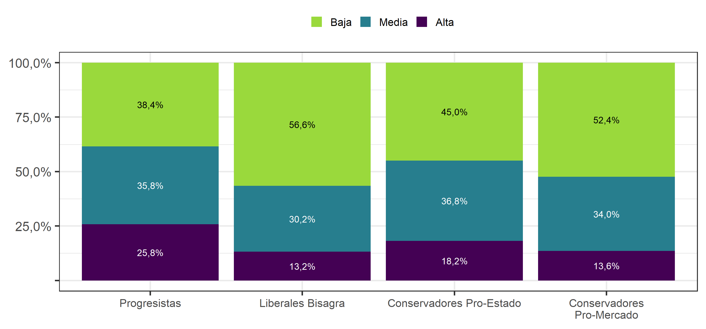

11.2 Modelo teórico de perfiles ideólogicos

11.2.1 Aproximación Empírica
Con el propósito de indagar si existen patrones comunes de respuestas dadas por los ciudadanos a las cuestiones socio-económicos y moral-culturales que permitan identificar posibles grupos, se realizó un análisis de clases latentes (BIC=23.294,67).
De este análisis de identificaron cuatro clases que se diferencian entre sí, y que para efectos de describirlas las hemos llamado Progresistas, Liberales bisagra, Conservadores pro-estado, Conservadores pro-mercado.
11.2.2 Perfiles ideológicos: Resultados principales
Como puede observarse en la Figura 11.1, los progresistas corresponden al 24% de los entrevistados, y se caracterizan, más que ningún otro grupo, por apoyar un rol más activo del Estado en la provisión de servicios públicos de carácter más bien universalistas y con componentes solidarios. Al mismo tiempo adoptan muy mayoritariamente posiciones liberales en el plano moral-cultural, como es en el caso del aborto, o la adopción homoparental. El opuesto ideológico de este grupo son los Conservadores pro-mercado, correspondientes al 37%, quienes favorecen posiciones conservadoras en el plano moral (p. ej. que la educación sexual sea responsabilidad exclusiva de los padres), y respaldan políticas sociales focalizadas y la responsabilidad individual en pensiones. También son el grupo que más respalda la idea de que el país debe impedir mayormente el ingreso de inmigrantes al país.
Los Conservadores pro-estado, que alcanzan el 21% de la muestra, muestran bajos niveles de apoyo a políticas moral-culturales liberales, e incluso más bajos que sus contrapartes pro-mercado, pero también muestran menor apoyo a políticas sociales focalizadas o la responsabilidad individual en pensiones. Por último, los liberales bisagra (18%) tienden a adoptar posiciones intermedias entre los Progresistas y Conservadores. Se muestran más liberales en el plano moral-cultural que los Conservadores, pero también manifiestan mayor apoyo a la expansión de las capacidades del Estado, aunque no con la misma intensidad que los Progresistas.
A pesar de las grandes diferencias observables en los patrones de respuesta entre las clases, las opiniones referidas a educación pública y protección del medio ambiente muestran consensos muy claros en todos los grupos.
La composición socioeconómica e ideológica de los tipos de ciudadanos son marcadamente diferentes. Tal como se muestra en las Figuras 11.4 y 11.6, los progresistas tienen, en promedio, un nivel educativo alto (56% con educación superior técnica o universitaria), y una mayoría se identifica ideológicamente como de izquierda (44%) o centro (23%). Los conservadores, ya sean pro-estado o pro-mercado, tienen un nivel educacional más bajo (63% y 77%, respectivamente, tiene educación secundaria completa o menos), y son ideológicamente variados con presencia relevante en todos los grupos ideológicos, aunque algo menor en la izquierda, y algo mayor entre los que no se identifican. Los Liberales Bisagra, nuevamente, se ubican en una posición intermedia en ambas dimensiones.
Por último, las clases también muestran niveles muy variables de preferencia por el régimen democrático. Mientras este alcanza un 76% de apoyo entre los Progresistas, se reduce a un 62% entre Conservadores pro-estado, a un 60% entre Liberales Bisagra, y un 46% entre Conservadores pro-mercado (ver Figura 11.9).
Figura 11.1: Perfiles ideológicos de los chilenos (2019)
Nota: Resultados sin ponderar. N = 2.085
Figura 11.2: Sexo, según Perfiles ideológicos de los chilenos (2019)
Nota: Resultados Ponderados (con Diseño Muestral Complejo). N = 2.085
Figura 11.3: Tramo etáreo, según Perfiles ideológicos de los chilenos (2019)
Nota: Resultados Ponderados (con Diseño Muestral Complejo). N = 2.085
Figura 11.4: Nivel educacional, según Perfiles ideológicos de los chilenos (2019)
Nota: Resultados Ponderados (con Diseño Muestral Complejo). N = 2.083
Figura 11.5: Religión, según Perfiles ideológicos de los chilenos (2019)
Nota: Resultados Ponderados (con Diseño Muestral Complejo). N = 2.084
Figura 11.6: Posición política, según Perfiles ideológicos de los chilenos (2019)
Nota: Resultados Ponderados (con Diseño Muestral Complejo). N = 2.068
Figura 11.7: Interés en política, según Perfiles ideológicos de los chilenos (2019)
Nota: Resultados Ponderados (con Diseño Muestral Complejo). N = 2.083
Figura 11.8: Satisfacción con la Democracia, según Perfiles ideológicos de los chilenos (2019)
Nota: Resultados Ponderados (con Diseño Muestral Complejo). N = 2.034
Figura 11.9: Preferencia por la Democracia, según Perfiles ideológicos de los chilenos (2019)
Nota: Resultados Ponderados (con Diseño Muestral Complejo). N = 2.049
Figura 11.10: Consistencia durante las 4 olas en Posición política, según Perfiles ideológicos de los chilenos (2019)
Nota: Resultados Ponderados (con Diseño Muestral Complejo). N = 1.743
Figura 11.11: Consistencia durante las 4 olas en Identificación partidaria, según Perfiles ideológicos
Nota: Resultados Ponderados (con Diseño Muestral Complejo). N = 1.741
Figura 11.12: Consistencia durante las 4 olas en Identificación con coaliciones política, según Perfiles ideológicos (2019)
Nota: Resultados Ponderados (con Diseño Muestral Complejo). N = 1.637

Nota: Resultados Ponderados (con Diseño Muestral Complejo). N = 2.055